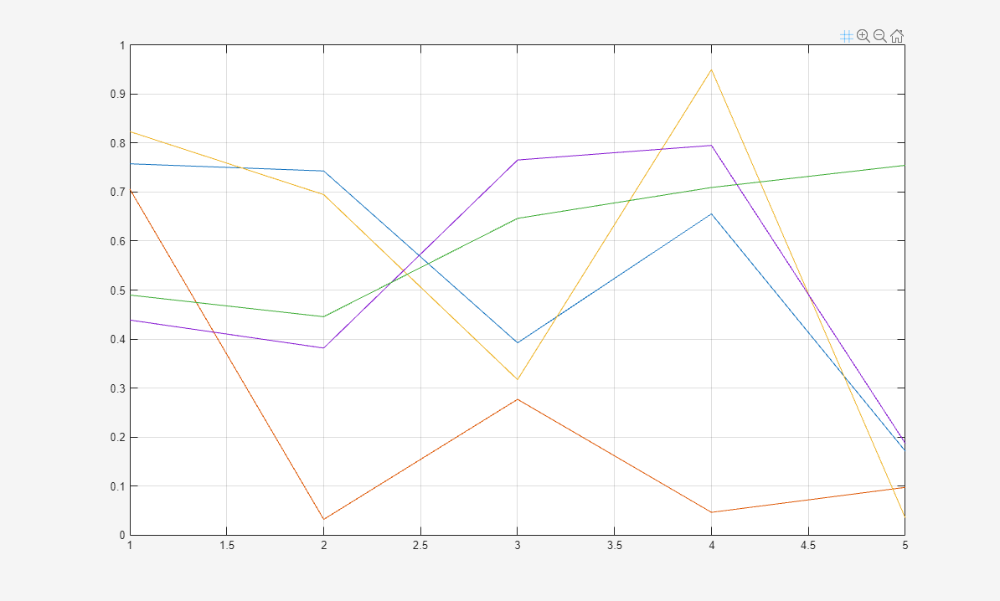
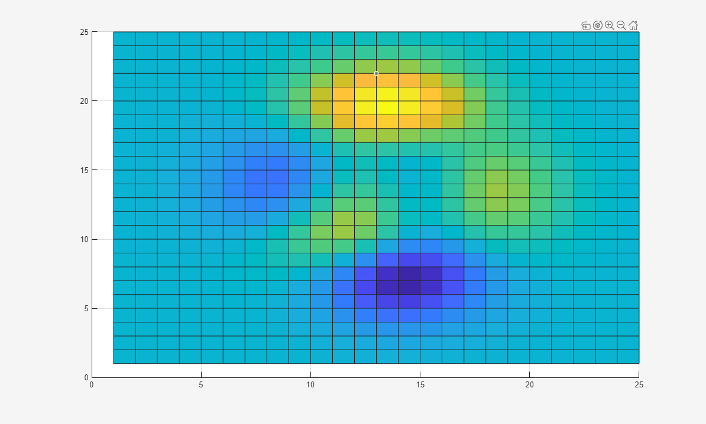

axtoolbarbtn
Add buttons to axes toolbar
Description
btn = axtoolbarbtn(tb)tb and returns the
ToolbarPushButton object.
btn = axtoolbarbtn(tb,style,Name,Value)
Examples
Add a custom state button for the axes toolbar that turns on and off the axes grid lines.
First, create a program file called mycustomstatebutton.m. Within
the program file:
Plot random data.
Create a toolbar for the axes with options to zoom in, zoom out, and restore the view using the
axtoolbarfunction.Add an empty state button to the toolbar using the
axtoolbarbtnfunction. Return theToolbarStateButtonobject.Specify the icon, tool tip, and callback function for the state button by setting the
Icon,Tooltip, andValueChangedFcnproperties. This example uses the icon, which you must first save as an image file
called
icon, which you must first save as an image file
called mygridicon.pngon your path.
When you run the program file, click the icon to turn on and off the grid lines.
function mycustomstatebutton plot(rand(5)) ax = gca; tb = axtoolbar(ax,{'zoomin','zoomout','restoreview'}); btn = axtoolbarbtn(tb,'state'); btn.Icon = 'mygridicon.png'; btn.Tooltip = 'Grid Lines'; btn.ValueChangedFcn = @customcallback; function customcallback(src,event) switch src.Value case 'off' event.Axes.XGrid = 'off'; event.Axes.YGrid = 'off'; event.Axes.ZGrid = 'off'; case 'on' event.Axes.XGrid = 'on'; event.Axes.YGrid = 'on'; event.Axes.ZGrid = 'on'; end end end

Create a custom push button for the axes toolbar that snaps the view of the axes to a 2-D view.
First, create a program file called mycustompushbutton.m. Within
the program file:
Plot a surface.
Create a toolbar for the axes with options to zoom in, zoom out, rotate, and restore the view using the
axtoolbarfunction.Add an empty push button to the toolbar using the
axtoolbarbtnfunction. Return theToolbarPushButtonobject.Specify the icon, tool tip, and callback function for the push button by setting the
Icon,Tooltip, andButtonPushedFcnproperties, respectively. This example uses the icon, which you must first save as an image file calledmy2dicon.pngon your path.
When you run the program file, click the icon to snap the view of the axes to a 2-D view.
function mycustompushbutton surf(peaks(25)) ax = gca; tb = axtoolbar(ax,{'zoomin','zoomout','rotate','restoreview'}); btn = axtoolbarbtn(tb,'push'); btn.Icon = 'my2dicon.png'; btn.Tooltip = 'Snap to 2-D view'; btn.ButtonPushedFcn = @customcallback; function customcallback(src,event) view(event.Axes,2) end end

Input Arguments
Name-Value Arguments
Specify optional pairs of arguments as
Name1=Value1,...,NameN=ValueN, where Name is
the argument name and Value is the corresponding value.
Name-value arguments must appear after other arguments, but the order of the
pairs does not matter.
Before R2021a, use commas to separate each name and value, and enclose
Name in quotes.
Example: axtoolbarbtn(tb,'push','Icon','myimage.png','Tooltip','My Icon
Tooltip')
Note
The properties listed here are only a subset. Push buttons and state buttons support a different set of properties. For a full list of properties and descriptions for each type, see the associated property page.
Button icon, specified as one of these values. The axes toolbar displays icons as grayscale images. MATLAB® scales down the image to fit, if necessary.
File name — Specify the file name as a character vector or a string scalar. The file name can be preceded by a path. The image file must be in JPEG, GIF, or PNG format.
Array — Specify an m-by-n-by-3 array of RGB triplets that represent pixels in an image.
Matrix — Specify an m-by-n matrix of numeric values that represent pixels in an image.
If the values are of an integer type, then specify values between
0and63. A value of0is opaque and a value of63is transparent.NaNis also transparent.If the values are of type
double, then specify values between1and64. A value of1is opaque and a value of64is transparent.NaNis also transparent.
Predefined icon — Specify one of the names in this table.
Icon Name Result 'brush'
'datacursor'
'export'
'rotate'
'pan'
'zoomin'
'zoomout'
'restoreview'
'none'No icon
Example: btn.Icon = 'icon.png'
Example: btn.Icon = 'C:\Documents\icon.png'
Example: btn.Icon = 'rotate'
Button tool tip, specified as a character vector, cell array of character vectors, or a string array. Use this property to display a message when you hover the pointer over the button. To display multiple lines of text, specify a cell array of character vectors or a string array. Each element in the array displays a separate line of text.
Example: btn.Tooltip = 'My Tooltip'
Version History
Introduced in R2018b